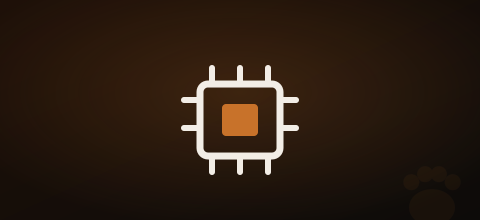

El microchip es el documento de identidad de tu Rottweiler. Sin él no puedes obtener la licencia PPP, no puedes inscribirte en el censo municipal y, si el perro se pierde, la posibilidad de recuperarlo cae en picado. Es además uno de los requisitos más sencillos y baratos de cumplir.
⚠️ Obligatorio por ley: el microchip es exigido por la Ley 50/1999 de Tenencia de Animales Potencialmente Peligrosos y debe registrarse en el RIAC (Registro de Identificación de Animales de Compañía) de tu comunidad autónoma. Sin registro, el microchip no tiene validez legal.
¿Qué es el microchip y cómo funciona?
El microchip es un pequeño transpondedor RFID del tamaño de un grano de arroz que se implanta bajo la piel del perro, entre los omóplatos. Contiene un código único de 15 dígitos que lo identifica de forma permanente.
No es un GPS — no localiza al perro en tiempo real. Cuando alguien encuentra un perro, cualquier clínica veterinaria o protectora puede leer el chip con un lector y consultar en el registro quién es el dueño.
El código del microchip sigue el estándar ISO 11784/11785, universal en toda la UE. Esto significa que si viajas a Europa con tu Rottweiler, el chip es reconocido en todos los países miembros.
Proceso paso a paso para el microchip del Rottweiler
Implantación en la clínica veterinaria
El veterinario implanta el chip con una jeringa especial bajo la piel del cuello o entre los omóplatos. El proceso dura segundos y no requiere anestesia. El perro lo nota como una picadura normal. Puedes hacerlo desde los 3-4 meses de edad.
Verificación del número
El veterinario lee el chip con un lector para confirmar que funciona y anota el número de 15 dígitos en la cartilla sanitaria del perro. Guarda ese número — lo necesitarás para todos los trámites.
Registro en el RIAC autonómico
El registro lo suele gestionar el propio veterinario. Si no, tienes que hacerlo tú en el registro de animales de tu comunidad autónoma. En muchos casos es online y gratuito. Sin este paso, el chip existe pero no tiene validez legal.
Inscripción en el censo municipal
Con el número de microchip y el certificado de registro, inscribe al perro en el censo de tu ayuntamiento. Es obligatorio en la mayoría de municipios y puede tener una tasa asociada (gratuita en muchos casos).
Conservar el certificado
Guarda el certificado de microchip junto con la documentación del perro. Lo necesitarás para solicitar la licencia PPP, contratar el seguro RC y en cualquier trámite administrativo relacionado con el animal.
Precios orientativos 2026
| Concepto | Precio orientativo |
|---|---|
| Implantación del microchip | 20 – 50 € |
| Registro en el RIAC | Gratuito – 10 € |
| Inscripción censo municipal | Gratuito – 20 € |
| Total estimado | 20 – 80 € |

¿Qué pasa si cambio de domicilio o de dueño?
El microchip es permanente — no se puede ni se debe cambiar. Lo que cambia es la información asociada al número en el registro. Si te mudas o traspasas el perro, debes actualizar los datos en el RIAC de tu comunidad. El proceso suele ser online y puede tener una pequeña tasa.
En el caso de traspaso de propiedad, ambas partes (vendedor/donante y nuevo propietario) deben notificar el cambio. Sin esta actualización, el perro sigue figurando legalmente a nombre del anterior dueño.
💡 Consejo: Cuando adoptes o compres un Rottweiler, comprueba siempre que el microchip está registrado a tu nombre antes de firmar nada. Pide el certificado de microchip y verifica el número con un lector. Es una protección legal para ti.
Microchip vs collar con chapa identificativa
La chapa identificativa en el collar es recomendable como complemento, pero no sustituye al microchip. El collar se puede perder, romper o retirar. El microchip es permanente. La ley exige el microchip — la chapa es una buena práctica adicional.
Preguntas frecuentes
¿Es doloroso el microchip para el Rottweiler?
No significativamente. El proceso es como una vacuna normal — el perro nota la aguja pero no hay dolor posterior. No requiere anestesia ni recuperación. La mayoría de los perros ni reacciona.
¿El microchip localiza a mi perro si se pierde?
No. El microchip no es un GPS. Solo funciona cuando alguien escanea al perro con un lector. Para localización en tiempo real necesitas un collar GPS, que es un dispositivo separado.
¿Puedo viajar a Europa con mi Rottweiler microchipado?
Sí. El microchip ISO 11784/11785 es reconocido en toda la UE. Necesitarás además el pasaporte europeo para animales de compañía, que emite tu veterinario, y la vacuna antirrábica al día. Algunos países tienen requisitos adicionales — consulta antes de viajar.